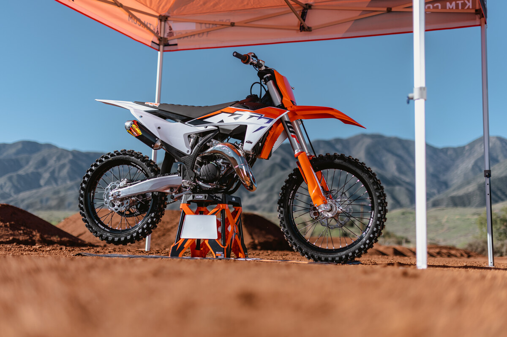

The FIM Motocross World Championship and AMA Supercross series, which is also an FIM World Championship, are the most prestigious competitions when it comes to motocross sport. Whilst serving as a testing ground for the READY TO RACE production models in KTM’s extensive SX range, the Red Bull KTM Factory Racing team has enjoyed incredible success in both championships over the last 12 years.
In 2021 KTM once again fielded a strong line-up in the FIM MXGP Motocross World Championship, with Jeffrey Herlings earning his fifth World Championship crown and second in the MXGP category with his KTM 450 SX-F. Tony Cairoli called time on an incredible career in which he won nine World titles including 94 Grand Prix wins and the team trophy at the Motocross of Nations in what was a special final season for the Sicilian. In MX2 KTM’s Tom Vialle was side-lined with injury, but made a strong comeback to finish third in the series. Teammate Rene Hofer enjoyed a strong season winning his first Grand Prix in Italy aboard his KTM 250 SX-F.
In 2022 reigning AMA Supercross Champion Cooper Webb once again will line-up in the 450SX category with the sole aim of defending his crown. Teammate Marvin Musquin joins him with a Supercross-only focus, while team newcomer Aaron Plessinger will be fighting hard with the new KTM 450 SX-F FACTORY EDITION to be a regular podium contender. In the 250SX category a more-experienced Max Vohland enters his second season with the team and will race the new KTM 250 SX-F FACTORY EDITION.
